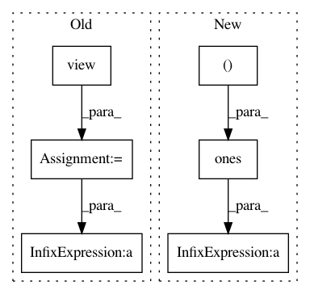

f93beff338925cc1bf1b3ff1b32a2c440a4c9427,tests/_tests_scripts/z_mvp_mnist_gan.py,CustomRunner,_handle_batch,#CustomRunner#Any#,18
Before Change
Docs.
images, _ = batch
images = images.view(images.size(0), -1)
bs = images.shape[0]
z = torch.randn(bs, 128).to(self.device)
generated_images = self.model["generator"](z)
// generator step
// predictions & labels
generated_labels = torch.ones(bs, 1).to(self.device)
generated_pred = self.model["discriminator"](generated_images)
// loss
loss_generator = F.binary_cross_entropy(
generated_pred, generated_labels
)
self.state.batch_metrics["loss_generator"] = loss_generator
// discriminator step
// real
images_labels = torch.ones(bs, 1).to(self.device)
images_pred = self.model["discriminator"](images)
real_loss = F.binary_cross_entropy(images_pred, images_labels)
// fake
generated_labels_ = torch.zeros(bs, 1).to(self.device)
generated_pred_ = self.model["discriminator"](
generated_images.detach()
)
fake_loss = F.binary_cross_entropy(generated_pred_, generated_labels_)
// loss
loss_discriminator = (real_loss + fake_loss) / 2.0
self.state.batch_metrics["loss_discriminator"] = loss_discriminator
def main():
After Change
// Assemble labels discriminating real from fake images
labels = torch.cat(
[torch.ones((batch_size, 1)), torch.zeros((batch_size, 1))]
).to(self.device)
// Add random noise to the labels - important trick!
labels += 0.05 * torch.rand(labels.shape).to(self.device)
// Train the discriminator
predictions = self.model["discriminator"](combined_images)
batch_metrics[
In pattern: SUPERPATTERN
Frequency: 3
Non-data size: 6
Instances
Project Name: catalyst-team/catalyst
Commit Name: f93beff338925cc1bf1b3ff1b32a2c440a4c9427
Time: 2020-04-21
Author: scitator@gmail.com
File Name: tests/_tests_scripts/z_mvp_mnist_gan.py
Class Name: CustomRunner
Method Name: _handle_batch
Project Name: facebookresearch/pytext
Commit Name: 8f54218a8ed67dc6c3df585ff89777b1e2bb2c26
Time: 2019-12-06
Author: hyzhan@fb.com
File Name: pytext/optimizer/sparsifiers/tests/sparsifier_test.py
Class Name: TestSparsifier
Method Name: test_param_mask_with_pre_mask